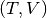

About the IOM_plugin_fourieroperators class
The WaveBlocks Project
@author: R. Bourquin
@copyright: Copyright (C) 2010, 2011, 2012, 2013, 2014, 2015 R. Bourquin
@license: Modified BSD License
Class documentation
The WaveBlocks Project
IOM plugin providing functions for handling the
propagation operators that appear in the Fourier
algorithm.
@author: R. Bourquin
@copyright: Copyright (C) 2010, 2011, 2012 R. Bourquin
@license: Modified BSD License
-
IOM_plugin_fourieroperators.add_fourieroperators(self, parameters, blockid=0)[source]
Add storage for the Fourier propagation operators.
| Parameters: |
- parameters – A ParameterProvider instance containing
at least the keys ncomponents and number_grid_nodes.
- blockid – The ID of the data block to operate on.
|
|---|
-
IOM_plugin_fourieroperators.delete_fourieroperators(self, blockid=0)[source]
Remove the stored Fourier operators.
| Parameters: | blockid – The ID of the data block to operate on. |
|---|
-
IOM_plugin_fourieroperators.has_fourieroperators(self, blockid=0)[source]
Ask if the specified data block has the desired data tensor.
| Parameters: | blockid – The ID of the data block to operate on. |
|---|
-
IOM_plugin_fourieroperators.load_fourieroperators(self, blockid=0)[source]
Load the Fourier operators.
| Parameters: | blockid – The ID of the data block to operate on. |
|---|
-
IOM_plugin_fourieroperators.save_fourieroperators(self, operators, blockid=0)[source]
Save the kinetic and potential operator to a file.
| Parameters: |
- operators – The operators to save, given as tuple .
- blockid – The ID of the data block to operate on.
|
|---|